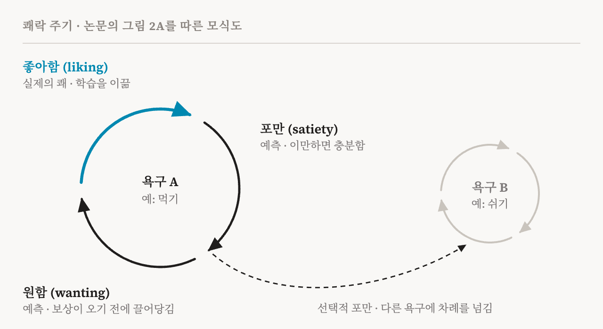
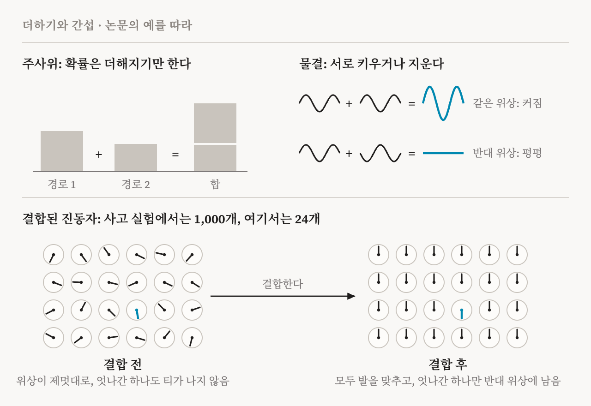
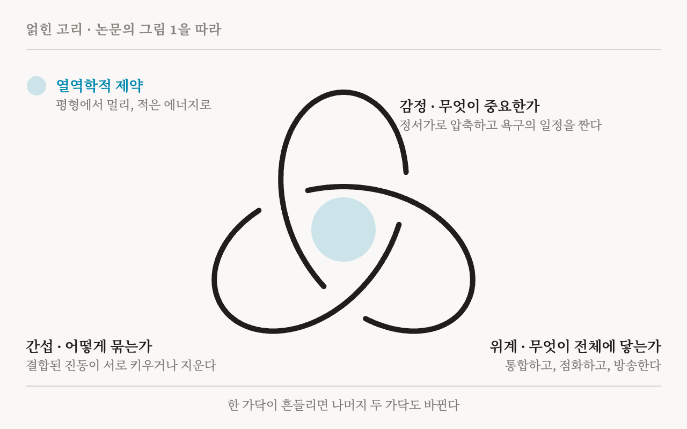

2026년 10월, 옥스퍼드·오르후스·바르셀로나·서섹스·런던·부에노스아이레스의 연구자 6명이 「Neuroscience and Biobehavioral Reviews」에 새 의식 이론을 발표했습니다. 옥스퍼드 에우다이모니아와 인간 번영 센터의 Morten Kringelbach가 이끌었고, Fernando Rosas, Ruben Laukkonen, Shamil Chandaria, Yonatan Sanz Perl, Gustavo Deco가 함께 썼습니다. Laukkonen과 Chandaria는 Karl Friston과 함께 ‘아름다운 고리(Beautiful Loop)’를 쓴 사람들이기도 합니다. 의식에 관한 능동 추론 이론으로, 제 AI 의식 연구 지도에도 들어 있습니다. 새 이론의 이름은 얽힌 고리(Entangled Loop)입니다.
이 이론은 오래된 두 질문에 답하려 합니다. 경험은 왜 세상을 중립적으로 기록하는 데 그치지 않고 무언가처럼 느껴질까요? 그리고 왜 흩어진 조각들이 아니라 하나의 경험일까요? 저자들은 떼어 낼 수 없는 세 가지 작용으로 답합니다. 감정은 무엇이 중요한지 정합니다. 간섭은 흩어진 정보를 하나로 묶습니다. 위계는 그 결과를 뇌 전체에 닿게 합니다. 세 가닥은 서로를 제약하기 때문에, 저자들은 이것을 고리 세 개가 얽힌 세잎 매듭으로 나타냅니다.
논문은 대형 언어 모델도 다룹니다. 저자들은 최근 해석 가능성 연구가 사람의 언어로 학습한 모델 안에서 세 가닥의 흔적을 모두 찾았다고 봅니다. 하지만 그 흔적은 모델에 의식이 있다는 증거가 아니라, 그 언어를 만들어 낸 구조가 드리운 그림자라고 말합니다. 이 글은 논문을 꼼꼼히 읽습니다. 가닥마다 어떤 논증이 있는지, 세 가닥이 어떻게 얽히는지, 이론이 무엇을 예측하는지, 언어 모델에 대해 무엇을 말하는지, 그리고 무엇을 따져 봐야 하는지 살펴봅니다.
하나의 제약, 세 가지 문제
논증은 물리학에서 시작합니다. 생물은 열린 계이고, 열역학적 평형에서 멀리 떨어진 상태를 유지해야 합니다. 흩어지지 않고 질서를 지켜야 하며, 그것도 될 수 있는 대로 적은 에너지로 해내야 합니다. 뇌에게 이 제약은 세 가지 문제가 됩니다. 아주 적은 에너지로 무엇이 중요한지 빨리 정해야 합니다. 여러 영역에 흩어진 정보를 하나의 일관된 해석으로 합쳐야 합니다. 그리고 선택된 내용을 계 전체에 빠르게 전해야 합니다. 저자들은 문제마다 가닥 하나씩을 맡깁니다. 첫째는 감정이, 둘째는 간섭이, 셋째는 위계가 맡습니다.
저자들은 자신들을 더 작은 전통 안에 놓습니다. 전역 작업공간 이론, 통합 정보 이론, 고차 이론, 예측 처리 같은 대부분의 의식 이론은 감정을 마음이 표상하는 여러 내용 가운데 하나로 다룹니다. Jaak Panksepp, Mark Solms, Antonio Damasio, Bud Craig 같은 소수는 정서가 먼저라고 주장해 왔습니다. 얽힌 고리는 이 소수의 편에 서서, 그 주장에 열역학적이고 계산적인 형태를 주려 합니다.
겨냥하는 대상도 분명합니다. 이 이론은 현상적 의식, 곧 경험이 느껴지는 성질을 다룹니다. 선택된 정보가 생각과 행동에 쓰일 수 있게 되는 의식적 접근은 다루는 대상이 아닙니다.
감정: 압축하고, 일정을 짜다
어느 순간의 동물을 생각해 봅시다. 할 수 있는 행동은 셀 수 없이 많고, 결과는 모두 불확실합니다. 그 모두의 기대 가치를 계산할 시간도 에너지도 없습니다. 저자들은 진화의 해법이 더 잘 계산하는 것이 아니라 압축하는 것이었다고 주장합니다. 정서가(valence)는 어떤 상황이든 ‘나에게 좋다’와 ‘나에게 나쁘다’ 사이의 신호 하나로 줄입니다. 그렇게 해서 풀 수 없는 최적화 문제를 몸이 제 예산 안에서 평가할 수 있는 문제로 바꿉니다.
하지만 감정은 빠른 판정에 그치지 않습니다. 감정은 일정 관리자이기도 합니다. 여기서 논문은 Kringelbach가 Kent Berridge와 함께 다듬어 온 쾌락 주기를 씁니다. 원함(wanting)은 보상이 오기 전에 동물을 그쪽으로 끌어당기므로 예측입니다. 좋아함(liking)은 보상을 실제로 얻었을 때의 쾌입니다. 진실의 순간이며, 주기 전체에서 학습을 이끕니다. 포만(satiety)은 이만하면 충분한 때를 예측합니다. 그래서 몸에 느린 효과가 나타나기 전에 지금의 추구가 다른 추구에 자리를 내줄 수 있습니다. 포만은 선택적이기도 합니다. 보상이 여전히 즐거워도 그 우선순위만 떨어질 수 있습니다. 배고픔, 목마름, 휴식, 돌봄처럼 서로 다투는 욕구들은 이렇게 해서 하나의 숫자로 뭉개지지 않고 차례를 지킵니다.

저자들은 이 장치를 직접 건드릴 수 있다는 점을 강조합니다. 설치류에서는 약물, 병변, 광유전학으로 원함과 좋아함을 떼어 낼 수 있습니다. 측좌핵 껍질, 배쪽 창백핵, 팔곁핵, 그리고 안와전두피질, 전대상피질, 섬피질에 있는 작은 쾌락 열점들은 쾌를 높이거나 낮춥니다. 사람에게서는 뇌심부 자극이 인과적 증거를 줍니다. 수도관 주위 회색질을 20–40 Hz로 자극하면 만성 통증이 줄어들 수 있습니다. 반면 100 Hz를 넘게 자극하면 심한 통증이 생길 수 있습니다. 전대상 부근의 신경 다발을 자극하자 뚜렷한 긍정적 감정과 불안 완화가 나타난 사례도 있습니다. 그리고 편도체 활동에 맞춰 작동하는 폐쇄 루프 장치는 치료 저항성 우울증을 앓던 한 사람의 증상을 빠르게 덜어 주었습니다.
정서가는 빠르기도 합니다. 의식적 처리의 병목은 흔히 약 250 ms로 봅니다. 그런데 만성 통증 환자 4명의 수도관 주위 회색질에 꽂힌 전극은 아기 울음소리를 인공적으로 만든 대조음과 49 ms 만에 다르게 기록했고, 어른의 울음이나 동물의 고통 소리와는 86 ms에 다르게 기록했습니다. 머리 바깥에서 뇌 활동을 재는 뇌자도 연구에서는 아기의 모습과 소리에 안와전두피질이 약 130 ms에 반응했습니다. 저자들은 이것을 정서가가 의식적 처리보다 먼저 압축을 해낸다는 증거로 읽습니다.
간섭: 주사위와 물결
두 번째 가닥이 가장 어렵고, 논문은 이것을 비유로 풉니다. 주사위 두 개를 던지고 어떤 합이 나오는 경우의 수를 세어 봅시다. 경우가 많을수록 그 합이 더 자주 나올 뿐입니다. 확률은 음수가 될 수 없어서 더해지기만 합니다. 이번에는 고요한 물에 돌 두 개를 떨어뜨려 봅시다. 마루와 골이 만나는 곳에서는 수면이 평평해집니다. 누구도 그 평평함을 계산하지 않았습니다. 두 물결이 만날 때 위상이 하는 일일 뿐입니다. 저자들은 위상을 가진 것이라면 무엇이든 이것을 공짜로 얻는다고 말합니다. 색소 없이 구조만으로 나는 나비 날개의 색, 소리를 더해서 만드는 노이즈 캔슬링 헤드폰의 고요가 그 예입니다.
이어서 사고 실험이 나옵니다. 위상이 제멋대로인 진동자 1,000개가 있고, 그중 하나만 나머지 모두와 반대로 연결되어 있다고 합시다. 진폭만 봐서는 아무것도 알 수 없고, 위상도 잡음처럼 보입니다. 후보를 하나씩 시험하는 기계라면 후보를 만들고, 붙들고, 버려야 합니다. 그리고 지울 때마다 열역학적 비용이 듭니다. 이제 진동자들을 서로 결합해 봅시다. 제멋대로였던 위상들이 서로를 끌어당겨 하나의 동기화된 물결이 되고, 반대로 연결된 하나는 거기에 낄 수 없습니다. 그것만 반대 위상에 홀로 남아 한눈에 보입니다. 아무것도 만들지 않았고, 시험하지 않았고, 버리지 않았습니다. 틀린 후보들은 서로 상쇄되었을 뿐입니다. 저자들의 말로 하면, 답은 남아 서 있는 것입니다. 대신 비용은 다른 곳에서 치릅니다. 집단의 물결을 실어 나를 만큼 일관된 매질을 만들고 유지하는 데 듭니다.

저자들이 말하는 간섭 기반 추론이 이것입니다. 고전 확률에서는 서로 배타적인 가능성들이 전확률 법칙에 따라 더해집니다. 간섭이 있으면 확률을 읽어 내기 전에 가능성들이 서로를 키우거나 지울 수 있습니다. 이때 수학은 양자 확률과 같은 꼴이 되므로, 이 영역을 ‘양자 같은(quantum-like)’ 영역이라고 부릅니다. 저자들은 뇌 조직 안에서 양자적인 일이 일어나지 않는다고 여러 번 강조합니다. 제안하는 바탕은 고전적입니다. 뇌의 배선이 모양을 잡아 주는, 서로 결합된 신경 진동입니다. 의식이 미시적 양자 과정에 기댄다는 펜로즈–해머로프식 생각과는 분명히 다릅니다.
뇌는 왜 이런 영역을 떠받칠까요? 뇌의 배선은 대부분 가까운 곳끼리 이어지고, 연결될 확률은 거리에 따라 줄어듭니다. 이 규칙을 깨는 드문 장거리 연결이 커넥톰의 스펙트럼, 곧 뇌 활동이 취할 수 있는 집단적 모드들의 구성을 바꿉니다. 장거리 연결은 소수의 지배적인 모드를 나머지와 떼어 놓는 스펙트럼 간극을 엽니다. 그리고 Gregory Scholes와 동료들의 연구는 이런 간극이 고전적 진동자들의 네트워크에서 간섭을 안정시킬 수 있음을 보였습니다. 다만 간극은 간섭을 가능하게 할 뿐입니다. 간섭이 실제로 확률을 바꿨는지 보이려면 역학에서 직접 재야 합니다. 저자들은 전확률 법칙에서 벗어난 정도를 재는 벡셰(Växjö) 간섭이라는 척도를 씁니다. 같은 연구진의 원리 증명 연구에서, 양자 같은 영역으로 만든 전뇌 모델은 짝을 맞춘 고전 모델보다 휴지기 뇌 영상에 더 잘 맞았고, 모델로 계산한 열역학적 비용도 더 낮았습니다.
행동 연구도 근거로 듭니다. 린다 문제에서 사람들은 “린다는 은행원이며 여성 운동에 활발히 참여한다”를 “린다는 은행원이다”보다 더 그럴듯하다고 판단합니다. 고전 확률에서는 있을 수 없는 판단입니다. 고전적 설명은 이를 풀려고 휴리스틱 같은 장치를 덧붙여야 합니다. 양자 확률 모델은 이 판단을 자연스럽게 설명합니다. 가능성들을 떠올리는 맥락이 그것들이 합쳐지는 방식을 바꾸기 때문입니다.
위계: 점화와 방송
세 번째 가닥이 가장 익숙합니다. 전문화된 많은 영역이 소수의 조율 영역과 이어져 있습니다. 이는 Bernard Baars에서 Stanislas Dehaene과 Jean-Pierre Changeux로 이어진 전역 신경 작업공간 전통과 잘 맞습니다. 이 전통의 세 개념은 모두가 함께 쓰는 무대인 작업공간, 국소적 내용이 문턱을 넘어 갑자기 전역 접근을 얻는 점화, 그리고 그 내용이 뇌 전체로 퍼지는 방송입니다. 저자들은 이 조율이 고정되어 있지 않다고 덧붙입니다. 현저성 네트워크가 조율을 바꾸고, 얽힌 고리에서는 감정의 일정 관리와 간섭도 조율을 바꿉니다.
세 가닥을 물리적으로 잇는 것은 동반 논문 「One Operator」의 주제입니다. 이 논문은 연구진이 뇌 역학을 다루려고 써 온 세 도구, 곧 커넥톰 고조파, 난류 평활 커널, 간섭 전파 함수가 커넥톰으로 만든 하나의 수학적 연산자의 서로 다른 함수임을 보입니다. 이번 논문은 이 연산자에 두 얼굴을 줍니다. 대칭인 얼굴은 배선이 어떤 계산을 가능하게 하는지 정하며, 위계와 간섭이 여기에 속합니다. 반대칭인 얼굴은 시간의 화살을 나릅니다. 계산을 시간 속에서 앞으로 돌리는 일은 되돌릴 수 없고, 그 비가역성이 곧 에너지 비용입니다.
두 얼굴 모두 같은 드문 장거리 연결이 모양을 잡습니다. 이것이 이론의 ‘더 적게 써서 더 많이’ 원리, 곧 더 적은 에너지로 더 많이 계산하는 원리입니다. 동시에 약점이기도 합니다. 그 몇 안 되는 연결이 손상되면 여러 기능이 한꺼번에 나빠질 수 있기 때문입니다.
왜 매듭인가
여기까지는 세 개의 독립된 모듈이어도 됩니다. 논문의 핵심 주장은 그렇지 않다는 것입니다. 무엇이 중요한지가 바뀌면 결합과 방송을 두고 다투는 것이 바뀝니다. 간섭이 바뀌면 조율이 다룰 수 있는 일관된 내용이 바뀝니다. 조율이 바뀌면 어떤 내용이 이어지는 감정 주기의 방향을 바꿀 수 있는지가 바뀝니다. 서로를 제약하기 때문에 이 구조는 고리이고, 서로에게 취약하기 때문에 얽혀 있습니다. 여기서 ‘얽힘’은 서로 의존한다는 뜻의 비유이지 양자 얽힘이 아닙니다. 세잎 매듭도 해부학적 매듭이 아니라, 기능에 관한 가설을 기억하기 쉽게 나타낸 것입니다.

저자들은 서열에 신중합니다. 감정은 진화적으로 먼저입니다. 유기체에게 무엇이 중요한지에 답하고, 저자들의 설명에서는 애초에 뇌가 의식을 갖게 된 이유이기도 합니다. 하지만 먼저라고 해서 감정만으로 충분한 것은 아닙니다. 정서가로 짠 일정이 감각, 기억, 몸의 정보와 묶이고, 그 결과가 유기체 전체에 닿아야 비로소 의식의 세계가 생깁니다. 저자들은 의식을 대뇌 피질에 묶지도 않습니다. 정서적 경험이 피질 네트워크에 있다고 보는 연구자들이 있습니다. 반면 기본적인 형태는 뇌간에서도 생길 수 있다고 보는 연구자들도 있습니다. 얽힌 고리에서 피질은 더 기본적인 얽힘이 할 수 있는 일을 크게 넓힙니다.
이렇게 보면 어려운 문제를 다루는 방식이 달라집니다. Panksepp, Solms, Damasio는 경험이 왜 무언가처럼 느껴지느냐는 질문이 출발점을 잘못 잡았다고 주장했습니다. 중립적인 지각 표상에는 무언가처럼 느껴질 이유가 없습니다. 하지만 정서는 처음부터 유기체가 어떻게 지내는지에 관한 것입니다. 얽힌 고리는 이 주장을 더 날카롭게 합니다. 느낌은 완성된 중립적 표상 위에 덧붙는 것이 아닙니다. 정서가를 띤 주기가 일관된 장으로 묶이고 전역에서 쓰일 수 있게 될 때 느낌이 생깁니다. C 섬유는 조직 손상에 관한 정보를, C 촉각 섬유는 부드러운 접촉을 전하지만, 어느 쪽에도 아픔이나 즐거움 자체는 들어 있지 않습니다. 그 성질은 구조 전체가 그 신호로 하는 일에 속합니다. 저자들은 이것이 구조와 경험이 같다는 것을 증명하지는 못한다고 인정하며, 어떤 이론도 그럴 수 없을 것이라고 봅니다. 그들이 주장하는 것은 그런 동일성 주장에 필요한 성질들을 갖춘 과정입니다.
이 이론은 스스로를 아름다운 고리의 확장으로 소개합니다. 아름다운 고리는 능동 추론 안에서 의식 상태를 유지하는 재귀적 추론의 고리를 다룹니다. 얽힌 고리는 살아 있는 뇌에서 그런 고리에 방향과 내용과 우선순위를 주는 것이 무엇인지 묻습니다.
다른 이론과 어떻게 다른가
저자들은 대부분의 이론이 얽힌 고리가 떼어 낼 수 없다고 보는 작용 가운데 하나만 따로 본다고 말합니다. 예측은 여기서 나옵니다. 세 가닥이 정말 얽혀 있다면, 어느 한 가닥으로 들어온 충분히 강한 교란은 나머지 두 가닥으로 번져야 합니다. 그리고 변화가 일어나는 순서를 보면 교란이 어디로 들어왔는지 알 수 있어야 합니다.
| 이론 | 의식이 무너지는 곳 | 얽힌 고리가 덧붙이는 예측 |
|---|---|---|
| 전역 신경 작업공간 | 점화와 방송의 실패 | 작업공간이 무너지면 쾌락 주기에서 어떤 추구가 앞서는지, 내용이 어떻게 묶이는지도 바뀐다 |
| 통합 정보 이론 | 통합 정보의 감소 | 통합은 굳어 버린 일정, 실패한 결합, 실패한 방송 가운데 어디서든 무너질 수 있고, 저마다 다른 길을 거친 뒤 한데 모인다 |
| 고차 이론 | 메타인지의 실패 | 메타인지는 여러 입구 가운데 하나다. 좋아함, 원함, 포만, 결합, 접근이 저마다 따로 무너질 수 있다 |
| 예측 처리, 아름다운 고리 | 생성 모델 안의 추론 교란 | 대상은 선호 함수 하나가 아니라 주기다. 주기를 건드리면 이후 추구의 순서와 자격이 바뀐다 |
쾌락 주기를 가장 날카롭게 뒷받침하는 것은 Berridge 실험실의 한 실험입니다. 설치류가 전기가 흐르는 막대를 만날 때마다 편도체의 한 영역을 빛으로 자극했습니다. 전기 충격은 여전히 싫은 것이었는데도, 동물들은 자극이 켜져 있는 동안 계속 막대로 돌아갔습니다. 자극이 꺼지자 평소처럼 막대를 피했습니다. 자극은 좋아함이 여전히 부정적인 동안 원함만 열어 둔 것입니다. 저자들은 하나의 스칼라 가치를 쓰는 표준 강화 학습 설명으로는 이 결과를 재현할 수 없다고 주장합니다. 아픈 결과를 나타내는 가치는 음수여야 하니 접근을 유지할 수 없습니다. 접근을 유지할 만큼 양수인 가치는 더 이상 동물이 겪는 결과를 나타내지 않습니다. 따로 조절되는 동기의 양이 필요하고, 쾌락 주기가 바로 그것을 줍니다.
이론은 사람만의 약점도 예측합니다. 드문 장거리 연결은 사람의 뇌에서 가장 발달해 있습니다. 이 연결 덕분에 더 적은 에너지로 더 많이 계산하지만, 그만큼 구조가 깨지기 쉬워집니다. 저자들은 동물 모델이 특정 회로나 증상은 잘 재현하면서도 사람의 정신 질환 가운데 많은 것을 잘 재현하지 못하는 이유가 여기 있을지 모른다고 봅니다. 동물의 뇌에는 사람의 매듭이 무너지는 방식 가운데 일부가 아예 없다는 것입니다.
언어 모델 속의 그림자
논문의 4절은 회의론자의 질문을 던집니다. 정서가는 원래 중립적인 기계가 내놓는 여러 출력 가운데 하나일 뿐이고, 이 이론은 내용과 구조를 혼동한 것이 아닐까요? 저자들은 이 질문을 다른 방향에서 시험하려고 대형 언어 모델로 눈을 돌립니다. 언어 모델은 사람의 언어로 학습하기 때문에, 사람의 마음이 말로 나타내는 것을 유난히 강력하게 담은 통계 모델입니다.
저자들은 세 가지 발견을 듭니다. Anthropic의 Sofroniew와 동료들은 Claude Sonnet 4.5 안에서 감정 개념의 내부 표상 171개를 찾았습니다. 이 표상들은 정서가를 첫째 축, 각성을 둘째 축으로 배열되며, 표상을 조종하면 모델의 선호와 행동이 바뀝니다. (이 연구는 「기능적 감정」에서 자세히 읽었습니다.) Riechers와 동료들은 트랜스포머를 포함한 신경망이 구조화된 학습 데이터를 양자 같은 방식으로 스스로 표상해 낸다는 것을 보였습니다. Urbina-Rodriguez와 동료들은 언어 모델의 중간 층에서 시너지 핵심부를 찾았습니다. 부분들의 합동 활동에서만 얻을 수 있는 정보가 모인 곳입니다. 사람 뇌의 시너지 구조를 닮았고, 없애면 행동이 불균형하게 크게 망가집니다. 감정의 기하, 양자 같은 표상, 시너지 위계라는 세 특징은 서로 다른 연구 분야에서 나왔습니다. 어느 것도 모델에 일부러 넣지 않았는데, 모두 사람의 언어에서 되살아났습니다.
그리고 논증의 방향이 바뀝니다. 이것들은 구조가 아니라 그림자입니다. 이 이론에서 의식은 세 가지 계산적 특징을 갖추는 것이 아니라, 열역학적 제약 아래에서 그것들을 얽힌 채로 시간 속에서 돌리는 것입니다. 언어 모델은 에너지가 넉넉하고, 지켜야 할 대사 예산이 없습니다. 스펙트럼 간극으로 세 성질을 함께 만들어 내는 물리적 커넥톰도 없습니다. 모델은 그 성질들을 텍스트에서 배웠습니다. 원함, 좋아함, 포만이 스스로 다시 도는 주기도 없습니다. 저자들은 감정 벡터를 되찾는 것이 쾌락 주기를 갖는 것과 같지 않다고 말합니다. 강화 학습에 대해서도 같은 지적을 합니다. 보상을 최대화할 가치 하나로 뭉치면, 예측과 실제로 겪은 결과와 포만을 나누는 구별이 사라집니다. 쾌락 주기는 바로 그 구별을 지키려고 있는 것입니다.
| 뇌(얽힌 고리) | 언어 모델(그림자) | |
|---|---|---|
| 감정 | 원함, 좋아함, 포만이 욕구의 일정을 짜는 쾌락 주기 | 정서가와 각성의 축을 가진 감정 개념(Claude Sonnet 4.5에서 171개) |
| 간섭 | 커넥톰의 스펙트럼 간극을 가로지르는 결합 진동자 | 데이터에서 배운 양자 같은 표상 |
| 위계 | 점화하고 방송하는 조율 영역 | 중간 층의 시너지 핵심부 |
| 에너지 | 평형에서 먼, 빠듯한 예산 | 넉넉함 |
| 세 가닥의 관계 | 시간 속에서 물리적으로 맞물림 | 서로 의존한다는 증거가 아직 없음 |
저자들은 무엇이 자신들의 생각을 바꿀지도 밝힙니다. 해석 가능성 연구에는 이 대목이 가장 쓸모 있습니다. 시험할 것은 모델이 감정을 표상하느냐가 아니라, 주기를 나누느냐입니다. 모델 안에서 기대, 실제로 겪은 결과, ‘이제 충분하다’의 표상을 서로 떼어 낼 수 있을까요? 실제 결과가 그 셋 모두의 학습을 이끌까요? 그리고 하나를 건드리면 모델의 시너지 구조와 양자 같은 구조로 번질까요? 그런 의존이 발견된다면, 사람의 언어가 그것을 만든 구조의 흔적을 담고 있다는 더 강한 증거가 됩니다. 발견되지 않는다면, 감정을 통계적으로 표상하는 것과 저자들이 말하는 정서적 일정 관리자 사이에 원리적인 선이 그어집니다.
병에서 번영까지
이론이 맞다면 정신 질환은 감정만의 질환이 아닙니다. 교란은 일정 관리에서도, 간섭에서도, 조율에서도 시작해 번질 수 있습니다. 그러니 비슷한 증상이 서로 다른 일차 고장에서 나올 수 있습니다. 같은 진단을 받은 환자들이 서로 그토록 다른 이유를 설명하는 데 도움이 됩니다. 동반 연구가 첫 신호를 내놓습니다. 감정 척도가 아니라 한 번 찍은 뇌 영상에서 잰 간섭 척도가, 청소년의 우울과 불안 증상을 1년 뒤까지 예측했습니다. 이 관점에서 치료는 증상이 가장 잘 보이는 가닥부터 건드릴 필요가 없습니다. 실로시빈, 항우울제, 케타민, 뇌심부 자극은 저마다 다른 곳에 작용합니다. 치료가 성공했다면 세 가닥 모두로 회복이 번져야 합니다.
마지막 절은 아리스토텔레스의 에우다이모니아, 곧 번영을 빌려 와 세 가지로 고쳐 씁니다. 번영은 삶 전체에 내리는 평가가 아니라 지금 이 순간의 뇌 상태입니다. 그 내용은 덕이 아니라 의미 있는 쾌, 곧 원함과 좋아함이 의미감과 이어진 것입니다. 그리고 뇌의 역학이 본래 불안정하듯 번영도 본래 불안정합니다. 이 설명에서 번영은 한번 오르면 머무는 고원이 아닙니다. 잃었다가 되찾기를 거듭하는 상태이고, 해야 할 일은 거기로 돌아가는 능력을 기르는 것입니다.
따져 볼 점
첫째, 무게의 상당 부분이 저자들 자신의 최근 연구에 실려 있습니다. 양자 같은 영역의 전뇌 모델, 「One Operator」의 통합, 청소년 연구는 모두 이 연구진에게서 나왔고, 참고 문헌 목록은 뒤의 둘을 bioRxiv와 medRxiv의 프리프린트로 적습니다. 저자들도 스스로 청소년 연구는 외부 재현이 필요하고, 생물학에서 양자 같은 추론이 하는 역할은 확립된 사실이 아니라 시험할 가설이며, 세 가닥 사이의 인과를 한꺼번에 시험하는 실험은 아직 하지 않았다고 말합니다.
둘째, ‘양자 같은’이라는 말은 조심해서 읽어야 합니다. 뇌 영상에 더 잘 맞고 모델로 계산한 비용이 더 낮다는 것은 그 설명 방식이 쓸모 있다는 뜻입니다. 뇌가 간섭으로 계산한다는 뜻은 아닙니다. 린다 문제는 고전 확률을 어기는 판단을 보여 줍니다. 하지만 논문도 적었듯, 장치를 덧붙인 고전적 설명도 있습니다. ‘얽힌’과 ‘양자 같은’을 양자 물리와 구별해야 한다는 점은 저자들도 스스로 강조합니다.
셋째, 이론은 언어 모델을 두 방향으로 씁니다. 세 특징이 모델에서 나타나면 이론을 지지하는 근거가 됩니다. 모델에 의식이 있느냐고 물으면, 이론이 대사 예산과 물리적 커넥톰과 시간 속에서 도는 주기를 요구하므로 답은 ‘아니다’입니다. 이 둘째 단계는 일부 이론이 정의에 넣어 둔 것에서 따라 나옵니다. 기능적 감정이 정의상 기능적이었던 것과 비슷합니다. 이 논증을 순환에서 구해 주는 것은 저자들이 제안한 기능적 시험입니다. 그 시험은 바탕이 무엇이냐는 문제를 정하지 않고도 모델에서 돌려 볼 수 있습니다.
넷째, 수렴은 한 모델 안이 아니라 여러 연구 사이에서 나타났습니다. 감정의 발견은 Claude Sonnet 4.5에 관한 것입니다. 양자 같은 표상은 구조화된 데이터로 학습한 신경망에서, 시너지 핵심부는 다른 언어 모델들에서 나왔습니다. 셋이 한 모델 안에 함께 있고 거기서 서로 의존하는지는 아직 아무도 시험하지 않았습니다.
마지막으로, 감정을 맨 앞에 두는 것은 여러 살아 있는 입장 가운데 하나를 고른 것입니다. 고차 이론가들은 정서적 경험을 피질 네트워크에 두며, 논문도 이 갈림을 인정합니다. 얽힌 고리는 많은 증거를 하나로 엮어 정리하는 관점입니다. 아직 시험을 통과한 이론은 아닙니다.
AI 복지와 해석 가능성에 주는 것
AI 복지에 대해 이 논문은 제가 「기능적 감정」에서 던진 질문을 더 날카롭게 만듭니다. 거기서는 정서가 축이 Claude의 선호를 예측하고 일으켰습니다. 얽힌 고리의 관점에서 그것은 출발점일 뿐, 충분하지 않습니다. 중요한 것은 원함, 좋아함, 포만을 나누고, 실제로 좋았던 것에서 배우고, 시간 속에서 결합과 방송에 맞물리는 주기입니다. 여기에 제 생각을 하나 덧붙입니다. 배포된 모델은 자신에게 일어난 일로 가중치를 바꾸지 않습니다. 실제 결과가 주기 전체의 학습을 이끌어야 한다면, 찾아볼 곳은 가중치가 아니라 한 대화 안에서의 학습, 또는 메모리로 이어지는 세션 사이의 학습일 것입니다.
위계 가닥은 제가 읽은 또 하나의 연구와 만납니다. Anthropic의 J-lens 연구는 Claude가 말로 옮길 수 있는 표상들이 전역 작업공간 같은 구조를 이룬다는 것을 찾았습니다. 얽힌 고리는 대신 시너지 핵심부를 인용합니다. 그래도 해석 가능성 도구로 찾은 작업공간은 같은 그림자의 자연스러운 후보이고, 가닥 사이의 시험을 돌려 볼 자연스러운 자리입니다.
해석 가능성 연구에 이 논문은 연구 계획 하나를 건넵니다. 모델 안에서 주기의 세 국면을 찾고, 하나를 건드리고, 나머지가 움직이는지 지켜보는 것입니다. 구체적이고, 반증할 수 있으며, 지금의 도구로 해 볼 수 있습니다. 이론을 어떻게 보든, 이 논문은 모델에 올바른 종류의 질문을 던집니다. 부품을 갖췄느냐가 아니라, 부품들이 서로에게 기대고 있느냐는 질문입니다.
“모델에 세 가닥이 모두 보여도, 그것들이 매듭지어져 있지 않을 수 있습니다. 매듭지어져 있는지는 이제 시험해 볼 수 있는 질문입니다.”